action: I will take legal action against you if you don't give me back my money.

arson: Peter carried out an arson attack on his enemy's house to take revenge on him.

authority: The king has authority over all the people in his kingdom.
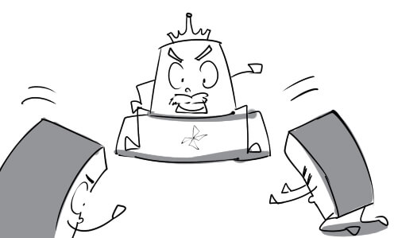
burglary: The young man has been arrested for burglary.
duress: His confession was made under duress.
convict: The convict was required to perform community services while serving a sentence.

crime: Bank robbery is the crime of stealing money from a bank.
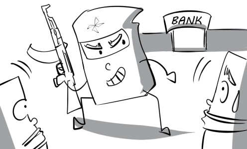
parole: Peter was released on parole thanks to his really good behaviour in prison.
fine: You have to pay $100 in fines if you park in the wrong place.

fraud: He pretends to be the CEO's assistant to commit fraud.

imprisonment: Mr Thomas was sentenced to life imprisonment for murdering his wife.

inequality: There are major inequalities of opportunity in the recruitment.
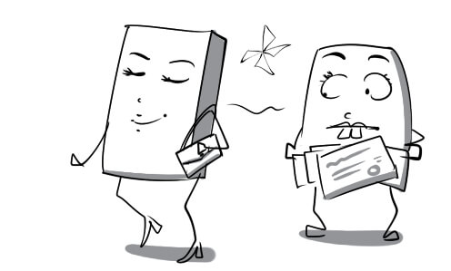
intent: Andrew puts poison in his boss' coffee with intent to murder him.

judge: The judge asked everyone to keep silent so that he could announce the final decision.
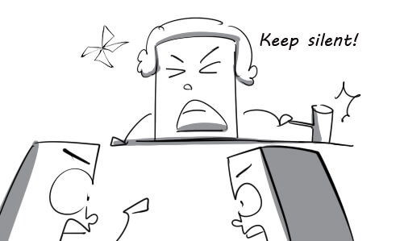
jury: The jury paid full attention to the trial proceedings.

kidnapping: There have been some kidnappings of children from schools recently.

lawyer: The lawyer is presenting evidence to prove that the defendant was innocent.

motive: Ransom is a common motive of kidnapping.
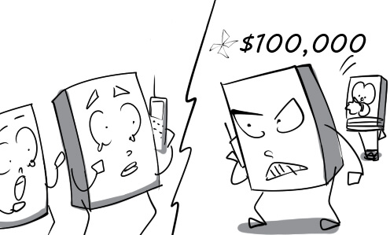
murder: The police are investigating a case of murder.
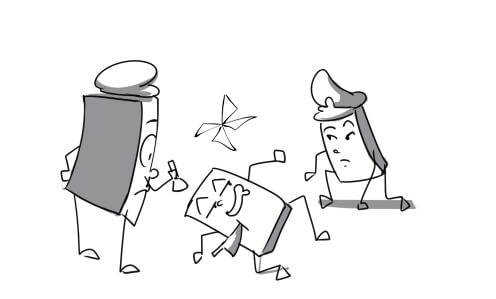
offence: The police officer pulled Peter over because of his traffic offence.

pickpocketing: The thief bumped into the victim purposely to commit pickpocketing.
prevention: The barbed wire serves as a method of prison escape prevention.

prison: This man was sentenced to 25 years in prison for killing his friend.

crime rate: The police are trying their best to reduce the crime rate.

property crime: David is charged for property crime because he stole a car.

prosecutor: The prosecutor is arguing that the defendant is guilty of the murder.

protection: The witness was put under police protection.

punishment: Mary asked her son to write 100 times "I will not skip school." as a punishment.

recklessness: His recklessness in riding his motorcycle will kill him some day.

smuggling: Peter was arrested at the airport for tobacco smuggling.
social system: The social system of Vietnam has changed dramatically.

swearing: They always use swearing when they have an argument.

trial: Andrew is on trial for drug smuggling.

the accused: The accused insists that he is innocent before the court.

toxic waste: This factory discharges toxic waste into the river.

vandalism: They usually commit an act of vandalism when they are angry.

victim: Peter was the innocent victim of a violent clash.

drug-related: The police concluded that his death is drug-related.
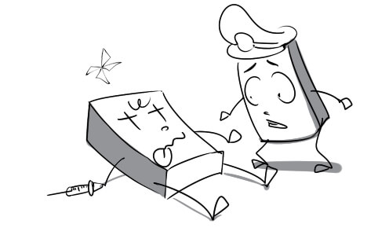
evil: The evil man tried to attack me with a baseball bat.

guilty: The judge announced that the defendant was guilty of the offence.
harsh: The bakery owner is verbally attacking the poor boy with harsh criticism.
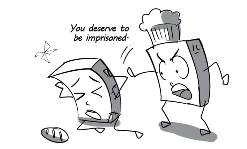
innocent: The judge announced that the defendant was innocent and released him immediately.

law-abiding: Peter is such a law-abiding citizen. He never violates any laws.

non-violent: They used lawful and non-violent forms of protest to express their opinion.

petty: The young boy was arrested for committing a petty crime.

random: The surveyor grabs a random pedestrian and asks him a few questions.

strict: The school rules are so strict that many students cannot stand them.

unintentional: I gave Mary an unintentional push when I walked by her.

victimless: Individual purchase of drugs is a victimless crime.

break into: I hit the intruder on the head when he was trying to break into my house.

abide by: All the soldier have to abide by the rules of the army.

abolish: The school board decided to abolish the unreasonable rule this morning.
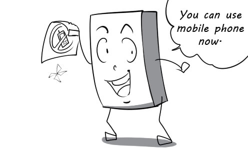
arrest: Eventually, the police succeed in arresting the dangerous criminal.
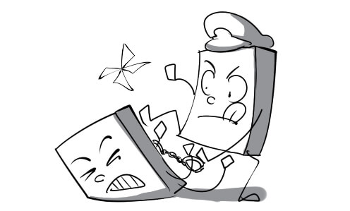
deter: You should lock your bicycle to deter people from stealing it.
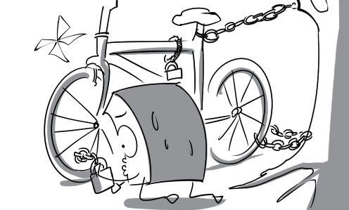
enforce: The police enforced speed limits on the roads to reduce the number of accidents.

monitor: The CIA are monitoring the suspect's activities everyday.

obedience: The government demands obedience to traffic laws from its citizens.

perpetrate: David perpetrated assault against a man when he was drunk.
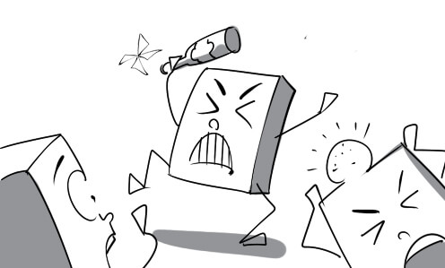
prove: Andy is trying to prove that he is not the one who broke the windows.
resent: The public resents the accused because he is such a cold-blooded murderer.
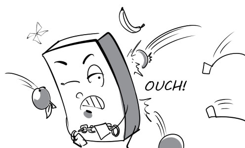
respect: My father taught me to respect the traffic laws.
appeal: The defendant wants to appeal against his death sentence.

accuse: My teammates accused me of the team's failure in the competition.
felony: Bank robbery with dangerous weapons is considered a felony.
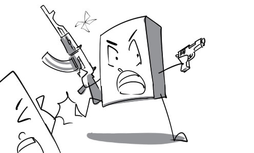
violate: You violated the rules when you stepped on the grass.
attention-grabbing: The new iPhone is the most attention-grabbing product at the technology fair.

celebrity: The celebrity is giving her fans autographs.

controversial: The existence of mermaids is a highly controversial topic.

distorted: The article provided distorted information about the actress.

entertaining: The audience found the juggling performance very entertaining.

informative: Peter found the article about energy saving very informative.
intrusive: The actress is irritated by the journalist's intrusive question.

mainstream: Many celebrities wear mainstream fashion while the others such as Lady Gaga love bizarre clothes.

pervasive: The stressful mood is pervasive in our office.
realistic: Being realistic, Daisy would rather marry an ugly but rich man than a handsome but poor one.

sensationalist: There is a sensationalist headline on the magazine cover today.
superficial: The celebrity lives a superficial life. We can never understand how he really feel.
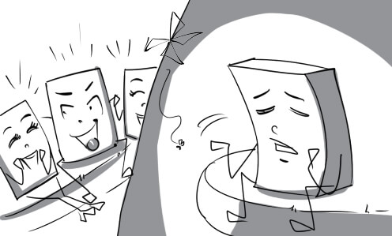
unbiased: The judges are expected to be completely unbiased.

well-informed: My brother is very well-informed about this singer. He will give you any information you want.

affect: Her life is severely affected by those cruel rumours.
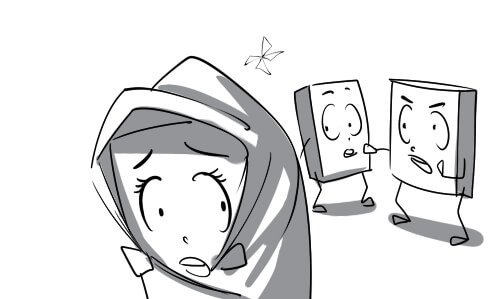
broadcast: The World Cup final is being broadcast on TV right now.

control: The singer's life is controlled by her manager. She can't make her own decision.

exploit: Her youth and talent are being exploited by her manager.
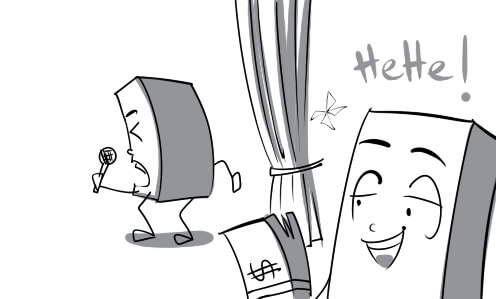
invade: Her privacy is invaded by the press.
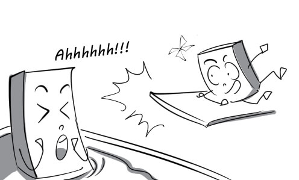
report: The TV news reported that there was a fatal truck accident on Highway 99.

review: The new movie is reviewed favourably on the newspaper.

verify: Peter asked his girlfriend to verify his alibi.
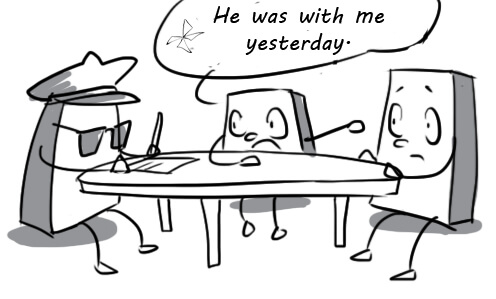
advertisement: My children like to watch advertisements on TV because they are very funny.

column: I like to read the gossip column on this newspaper.

press conference: The rocker held a press conference in Los Angeles to introduce his new album.

libel: The politician was very angry when he read the libel about him on the newspaper.

tabloid: Don’t read this terrible tabloid. They always report distorted stories.
prime time: In Vietnam, the news is broadcast during prime time.

headline: The headlines are usually decorated expressively to attract readers' attention.

broadsheet: Nhan Dan is one of the most popular broadsheets in Vietnam.

reality TV: Many people take part in reality TV to become famous.